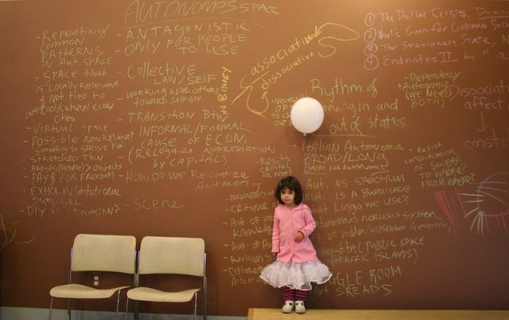

Telic Arts Exchange
951 Chung King Road
Los Angeles, CA 90012
[map]


The Public School

The Public School is a school with no curriculum. At the moment, it operates as follows: first, classes are proposed by the public (I want to learn this or I want to teach this); then, people have the opportunity to sign up for the classes (I also want to learn that); finally, when enough people have expressed interest, the school finds a teacher and offers the class to those who signed up. The Public School is not accredited, it does not give out degrees, and it has no affiliation with the public school system.
The Public School was initiated by Telic's Director, Sean Dockray, in 2007. It operated in Los Angeles for a year before new schools, enacting the same model, were started in Chicago and Philadelphia in 2009. In fall of 2009, Telic and common room received a fellowship from the Van Alen Institute to launch The Public School (for Architecture) New York. At the beginning of 2010, the school moved into 177 Livingston in Brooklyn with Triple Canopy and Light Industry and the "(for Architecture)" was dropped from the name. Also in the fall of 2009, Telic traveled to Betonsalon in Paris and Komplot in Brussels to help start new schools there. Since then, The Public School has also popped up in Helsinki (supported by the multipurpose space, Ptarmigan) and San Juan (with Betalocal).
Visit the Public School website: http://thepublicschool.org